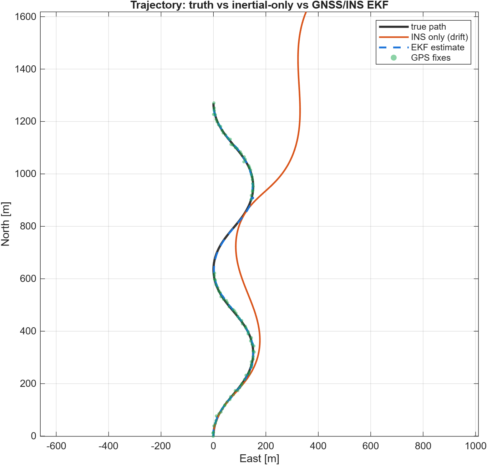
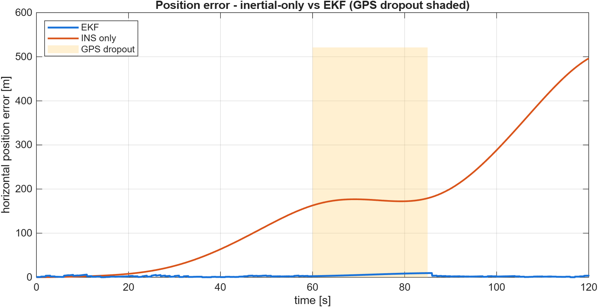
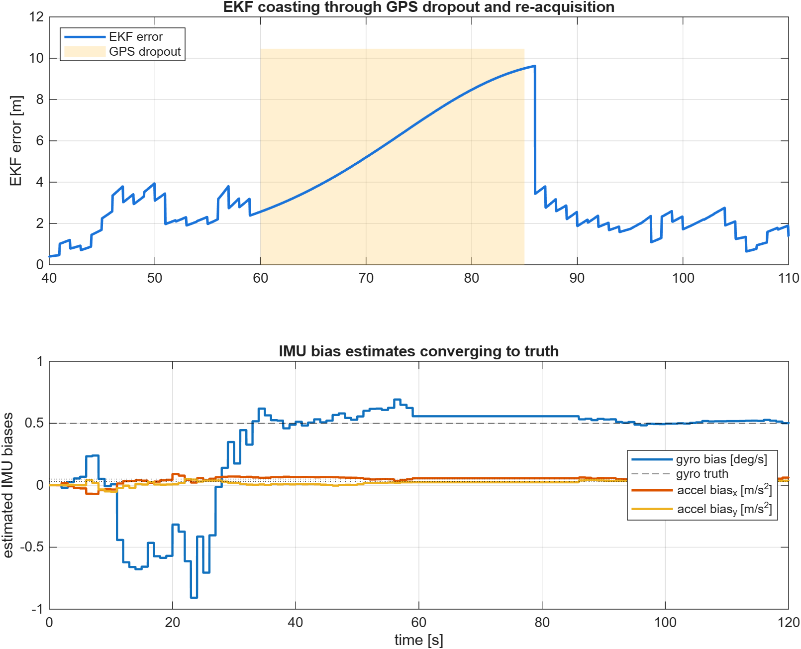

May 2026
GNSS/INS Loosely-Coupled Navigation
8-state EKF fusing IMU and GPS, with online bias estimation
A strapdown inertial navigator fused with 1 Hz GPS by an Extended Kalman Filter that estimates position, velocity, heading and the IMU biases. A 25 s GPS dropout shows inertial coasting (dead reckoning) versus unaided INS drift.
Highlights
- EKF horizontal RMS 2.5 m (below the ~3.5 m raw-GPS 2D scatter)
- Dropout error bounded to ~9.5 m over 25 s; unaided INS drifts ~500 m
- Gyro/accel biases recovered to within ~2% of truth
- Analytic EKF Jacobian; shared mechanisation isolates the value of fusion
Results & figures


